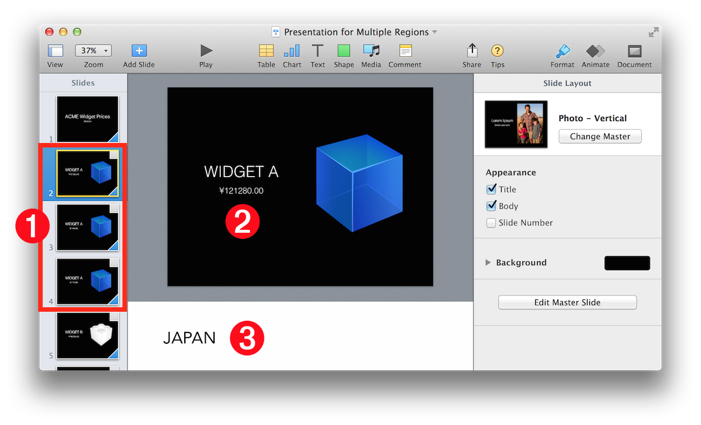
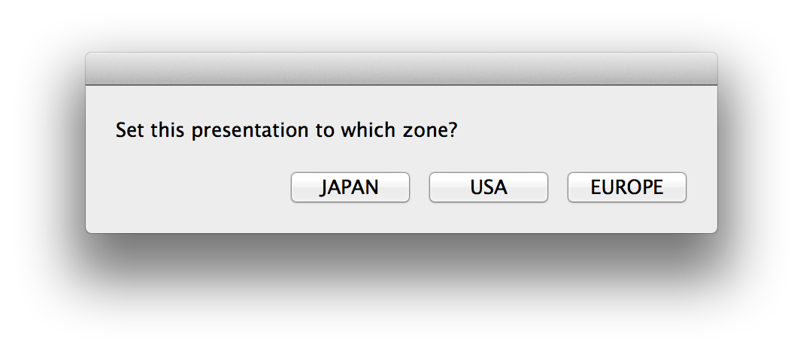
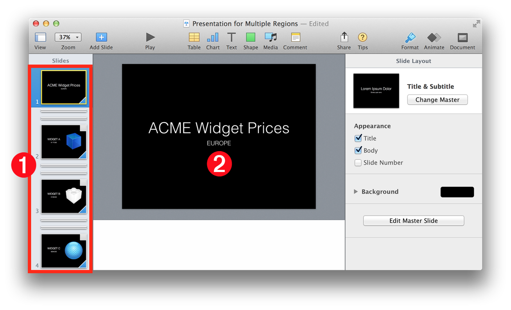

The Keynote Suite Slide Class (Excerpt)
slide n : [inh. iWork container; see also Compatibility Suite] : A slide in a presentation document.
properties
skipped ( boolean ) : Is the slide skipped? If true, the slide will not be shown when the presentation is played.
The value of the skipped property of a slide determines whether a slide is enabled or disabled for display when in its parent presentation document is played.
This deceptively simple property can be used in creative ways to deliver interesting enhancements to Keynote’s functionality.
For example, this short script will “un-skip” every slide in a presentation:
This short script could be used to skip all of the slides of a presentation that featured content about older topics:
Here’s another interesting use of the skipped property:
The Multi-Region Presentation
Maintaining up-to-date presentation materials is a challenge for sales and marketing organizations, often requiring the creation and maintenance of multiple versions of the same presentation. For example, a company that sells widgets in different countries or regions, would need to keep multiple versions of the same presentation, exactly alike except the prices for widgets would need to be displayed in the currency of the target country or region.
Using the skipped property and a simple AppleScript script, the company could create and use only one presentation, one that contains slides for all target countries or regions. The script would instantly adapt the presentation to address a specific country or region, without altering the presentation contents!
The following example will show how this done.
DO THIS ►DOWNLOAD and open an example Keynote document designed for presentation to three regions: Japan, USA, and Europe:
The various elements of the presentation file are described below:

1 Versions of Slide • Each slide of the core presentation is duplicated for each of the target regions. In this example, there are three target regions: Japan, USA, and Europe.
2 Localized Data • The content of the each slide is localized for its target region. For example, the selected slide, targeting Japan, displays the widget price in Yen instead of Dollars or Euros.
3 Region Identifier • Slides that are specific to a target region have the region name placed at the beginning the slide’s presenter notes as a means to enable the slide to be identified by the script as targeting a specific region.
DO THIS ►Open and run the example script: (⬇ see below )
The script will present a dialog from which you choose the region to present:

The script will disable (skip) only those slides (⬇ see below ) whose region identifier does not match the region chosen in the previous dialog 1 , add the target region name to the title slide 2 , and then run the presentation.

DO THIS ►Step through the short example presentation, and then run the script again, choosing a different target region.